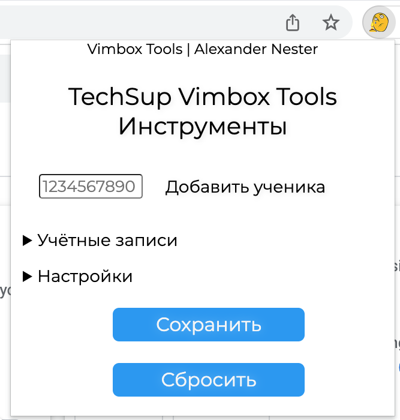

Предписание
Некоторые скриншоты были сделаны на более старой версии расширения, от чего интерфейс может отличаться. Вся информация на этой странице будет релевантна к моменту публичного релиза расширения.
Расширению нужен рефакторинг интерфейса. Связано это с разным уровнем понимания принципов дизайна на разных стадиях разработки. Рефакторинг будет имплементирован по принципам HIG-интерфейсов в 2023Q2.
Взаимодействие с расширением
-
Шаблоны
-
Инструменты
-
Административные Ресурсы
-
#Справка
-
Шаблоны
-
Инструменты
-
Административные Ресурсы
При открытии расширения есть четыре направления:

Пройдёмся по всем пунктам отдельно.

Здесь представлены кастомные шаблоны, которые используются 2й линией тех. поддержки.
Чтобы скопировать шаблон, достаточно нажать на кнопку "скопировать".
О замене шаблонов на кастомные я рассказываю здесь.

Различные хелперы для облегчения работы с Vimbox.
Кнопка "Добавить ученика" - важнейший элемент расширения, помимо шаблонов.
Левее от кнопки расположен InputField в который нужно вставить айди ученика. После, появится алерт и в буфер обмена скопируется следующая ссылка: https://profile.skyeng.ru/profile/1234567890/showcase
"Учётные записи" - развёртывающийся список, где можно хранить айди своих тестовых П/У. "Тест П Skysmart" статичен и неизменяем.
"Настройки" - исходя из названия можно достаточно точно предположить, что этот развёртываемый список хранит в себе параметры с которыми оперирует расширение.
"Показывать устаревшие тултипы" - этот переключатель тебе не нужен, поэтому расписывать зачем он и за что отвечают устаревшие возможности не буду. Просто знай, что они есть.
Этот раздел всё еще находится на стадии researching, поскольку противоречит заявлениям конфиденциальности версии 2022.7.
Внедрение раздела предварительно запланировано на 2023Q2(возможны неизмеримые задержки).
Ответы на частозадаваемые вопросы
- Как вернуться назад!? (в главное меню)
Чтобы вернуться назад, необязательно перезапускать / переоткрывать расширение. Для возвращения на главную страницу ты можешь нажать на оглавление топика.